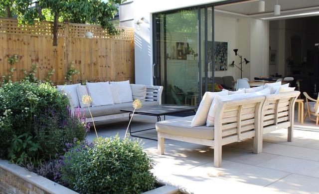
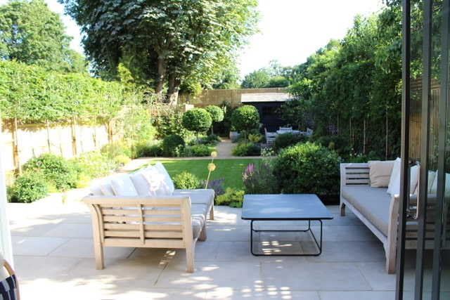
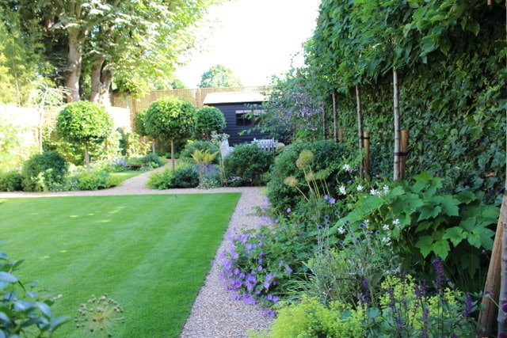
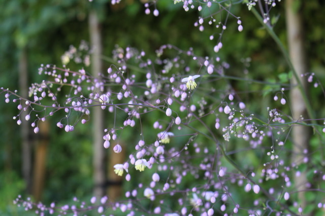
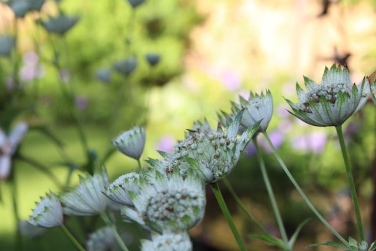

Urban Sanctuary Garden
The clients for this South London Garden wanted to change the layout of their garden and reduce part of their terrace near the house and recreate a new area for dining and entertaining elsewhere. Unfortunately there was a lot of dead or dying box hedging that we needed to remove too. The existing sawn sandstone was lifted and repurposed for a new separate terrace area and we reconfigured the steps down to a new path which surrounded the central lawn. Every inch of the existing paving was reused! Luckily the client was very happy to have generous planting beds so there was ample room to put in pleached hornbeam ( to give privacy) and a mix of planting to ensure all year round interest. The clients were very keen on a more traditional and formal style hence the cedar shingle roof on the shed and the formal lawn.